Security
Using McAfee Embedded Control
Objective
By the end of this module, you should be able to:
- Use McAfee Embedded Control (MEC) to manage the inventory of executables, its configurations, operation modes and logs.
- Have an understanding of the core MEC features, including code and application protection, write and read protection and dynamic whitelisting.
Lab Overview
The Intel Iot Gateway provides a McAfee layer that let you configure McAfee embedded products for the Wind River Linux target platform. McAfee Embedded Control (MEC) provides the following capabilities in Wind River Linux platforms:
code and application protection, which only lets whitelisted programs (binary executables, scripts) run. Any program that does not appear in the whitelist cannot run. This stops malicious programs from installing and functioning on the system.
tamper proofing for whitelisted programs so the files cannot be modified on the disk, directories or volumes
dynamic whitelisting, which eliminates the need to manually maintain the inventory list of authorized applications. This features let you manage and update whitelisted files.
In this lab, you will perform the following tasks:
explore how MEC manages the inventory of executables, configurations, operation modes and logging.
enable McAfee embedded control
observe how the MEC code and application protection features work
verify the MEC write/read protection feature
use MEC update mode
1. Exploring McAfee Embedded Control
In this section you will explore how McAfee embedded control integrates into Wind River Linux and how MEC manages the inventory of executables, configurations, operating modes and logging.
-
On the Intel Iot Gateway, open a terminal window and execute the following command to confirm that the MEC RPM is installed:
# rpm -qa | egrep solidcore solidcores3-6.6.0_145-r0.0.intel_baytrail_64 -
Execute the the following command to display the help menu:
sadmin help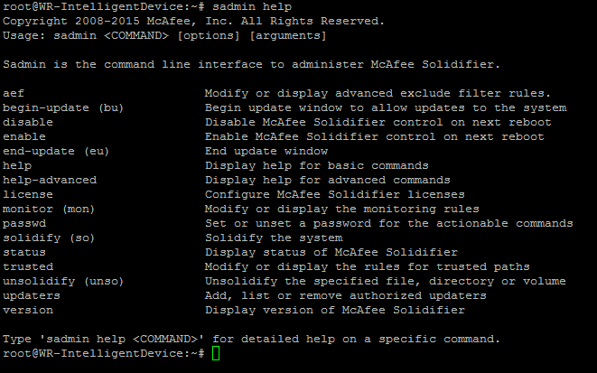
-
Execute the following command to review the list of all application control features and their status (enabled or disabled).
sadmin features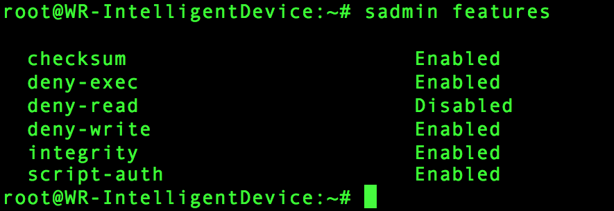
Note the following aspect of the MEC features:
The feature deny-exec prevents unauthorized or unknown binaries from executing. I is based on whitelisting technology, which only let binaries on the whitelist execute.
The feature script-auth is like deny-exec, but for scripts - only whitelisted scripts file can execute.
The feature deny-write providers tamper-proofing to protect data file ( for example configuration file). Unlike the deny-exec and script-auth features (which rely on a whitelist), the deny-write feature is rules-based. The MEC configuration file (solidcore.conf) records the rules.
The feature deny-read provides tamper-proofing to prevent reading of critical files. The feature deny-read is alos rule based (like deny-write) - The MEC configuration file (solidcore.conf) records the rules. The feature is disabled by default.
The feature integrity protects MEC data and file from modification , renaming or deletion.
-
As the MEC administrators, execute the following command to check the status of the McAfee embedded control on your target:
sadmin status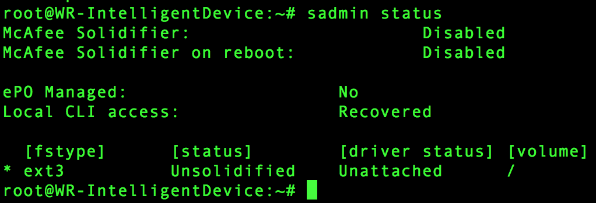
Observe that the status is Unsolidified.
The following table describes the fields and their meaning.
Field Description McAfee Solidifier specifies the operation mode of the application control McAfee Solidifier on reboot specifies the operation mode of the application control after a system restart ePO Managed displays the connectivity status of application control with McAfee ePO. In a standalone configuration, this status is No. Local CLI Access displays the statue (lockdown or recovered) of the local CLI. In standalone configuration, this status is Recovered. fstype displays the supported file systems for a volume status displays the current whitelist status for all the supported volumes on a system. If a volume name is specified, only the whitelist status for the volume displays. driver status displays whether the application control driver is loaded on a volume. If the driver is loaded, the status is attached; otherwise the status is unattached. volume displays the volume name -
Execute the following command to display the log file:
cat /usr/local/mcafee/solidcore/log/solidcore.log -
Execute the following command to display the configuration file:
cat /etc/mcafee/solidcore/solidcore.conf | moreObserve that the file includes the following rules and configurations:
the run-time mode
the run-time mode on next reboot
the license
the features installed
the features enabled
write protect, read protect, and monitoring rules
the installation directory
the log file directory
-
sadmin features list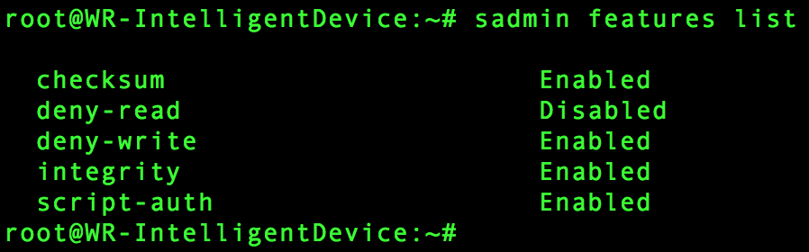
2. Enabling McAfee Embedded Control
In this section you will generate an initial whitelist, enable MEC, and restart the McAfee solidifier service.
Dynamic whitelisting is a core feature of MEC. The whitelist (or inventory) enumerates the set of programs (called authorized or solidified program code) that are allowed to run on the host computer. Any programs not in the whitelist are considered unauthorized - they cannot execute, and MEC logs their failed attempt to execute. Whitelisting does not change the files listed in the inventory.
-
As the MEC administrator, execute the following command to create the initial whitelist.
sadmin solidify /bin /boot /etc /lib /lib64 /opt /root /sbin /usr /wwwThis command may take a few minutes to complete.
-
As the MEC administrator, execute the following command to confirm that MEC created the initial whitelist. The application control component stores a whitelist for each volume at volume/.solidcore/scinv
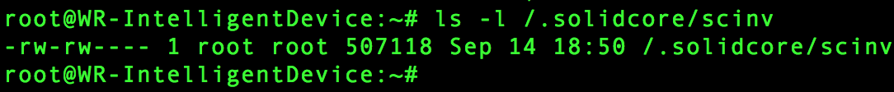
-
Execute the following command to check the status of McAfee embedded control.
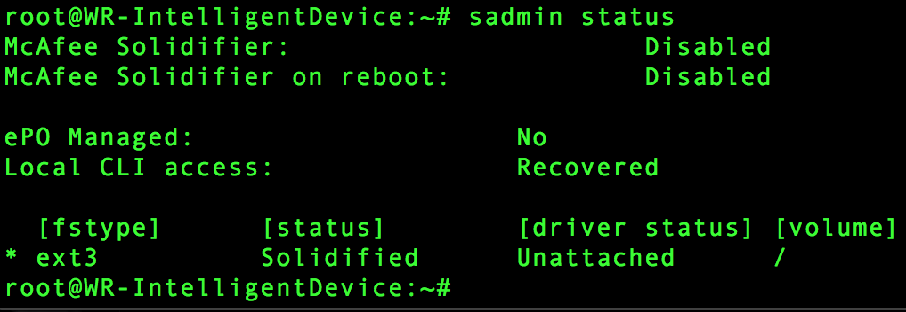
Observe that the status changed to Solidified.
-
As the MEC administrator, execute the following command to enable MEC.
sadmin enableMcAfee Solidifier will be enabled on service restart.
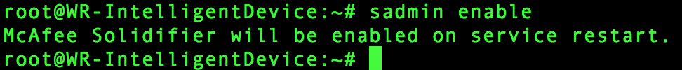
-
As the MEC admin, execute this command to restart the McAfee service
systemctl restart scsrvc -
Execute the following command to verify that MEC is enabled.
systemctl status scsrvc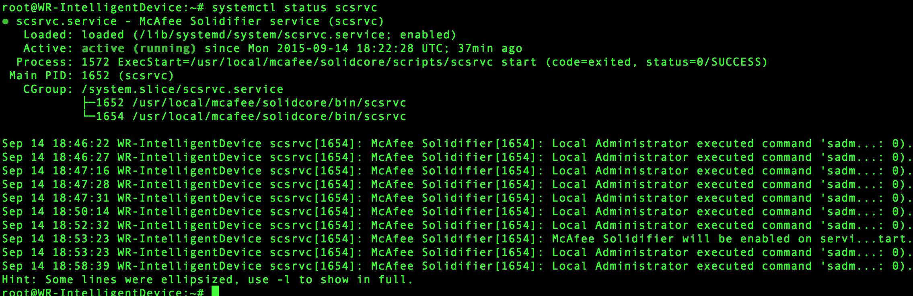
3. Verifying MEC Code and Application Protection
In this section you will create a script and observe how MEC code and application protection works.
MEC only lets whitelisted programs (binaries, executables, or scripts) run - any program not in the whitelist cannot run.
-
Create the script by typing
# vi /root/test_script.shType "i" to enter insert mode and then type
#!/bin/bash echo "Hello, World"Then press "ESC" and type “:wq” This will save and quit the vi editor.
-
Then try to execute the script.
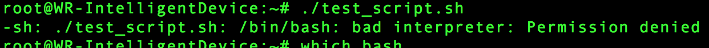
Note the response Permission denied - MEC did not allow the script to run.
-
Review the log by typing
cat /usr/local/mcafee/solidcore/log/solidcore.log | tail -n 1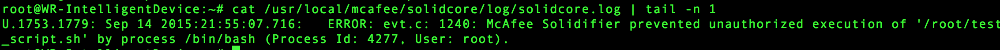
This response indicates that MEC prevented the script from executing.
-
Check if the script is on the whitelist
sadmin list-solidified | grep /root/test_script.shNot out displays - this confirms that test_script.sh is not on the whitelist.
-
Add test_script.sh to the whitelist
sadmin so /root/test_script.sh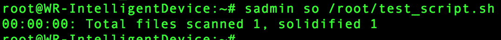
-
Execute the command again.
/root/test_script.sh Hello, World -
Check the MEC log. The script was allowed to execute.
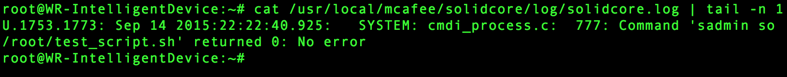
-
4. Verifying MEC Write/Read Protection
In this section you will implement write and read protection to the file /root/test_script.sh
MEC not only protects executable files, but also data files (including configuration files). The MEC write/read protection feature provides tamper-proofing for all kinds of files. Unlike the code and application protection feature is rule-based, with the rules recorded in the MEC configuration file).
-
Execute the following command to set write protection for the file.
sadmin wp -i /root/test_script.sh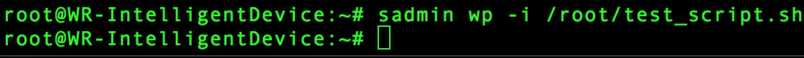
-
As the MEC administrator, execute the following command to review the MEC configuration file and confirm that you added a rule to write-protect /root/test_script.sh
cat /etc/mcafee/solidcore/solidcore.conf | more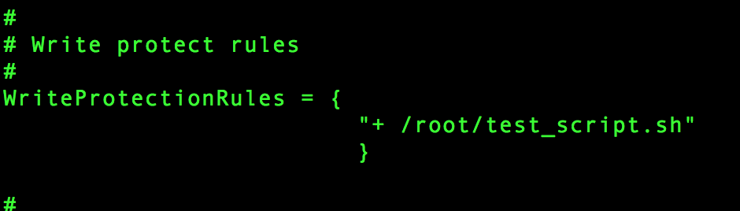
-
Now try to modify the file by executing the following command.
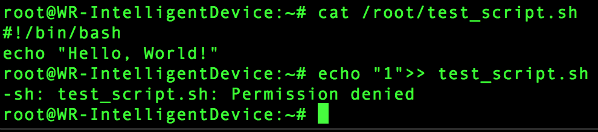
-
Execute the following command to review the messages in the log file solidcore.log so you can determine the reason for the Permission denied.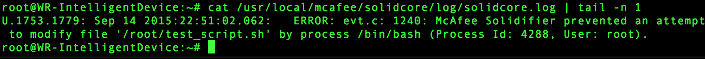
-
Execute the following command to enabled deny-read and then review the status of the MEC features.
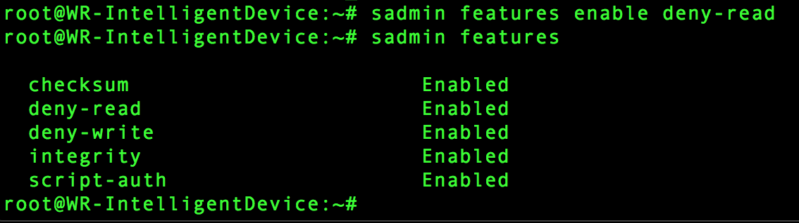
The response indicates that the deny-read feature.
-
Execute the following command to set read protection for the file.
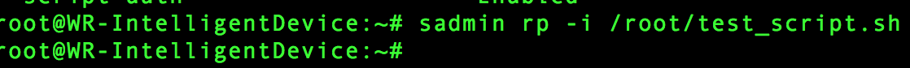
-
Execute the following command to review the MEC configuration file and confirm that you added read protection for the file /root/test_setup.sh
cat /etc/mcafee/solidcore/solidcore.conf | more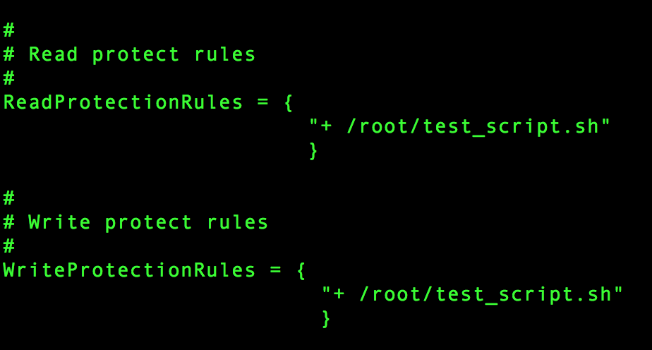
-
Now attempt to read the file by printing to the console.
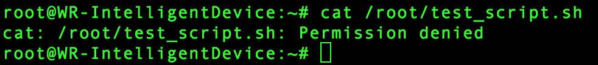
-
Execute the following command to review the messages in the log file solidcore.log so you can determine the reason for the Permission denied error.
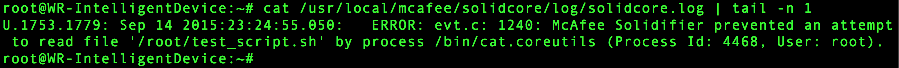
5. Using the Update Mode
In this section you will use MEC update mode to update the file /root/test_script.sh which is write and read protected.
When MEC is in update mode it allows all changes on a protected system. You can use update mode to complete maintenance tasks, such as installing patches or upgrading software and data files.
-
Type this command to cause MEC to go into update mode.
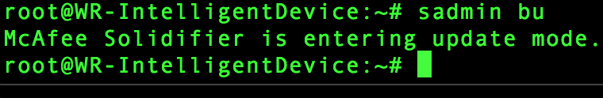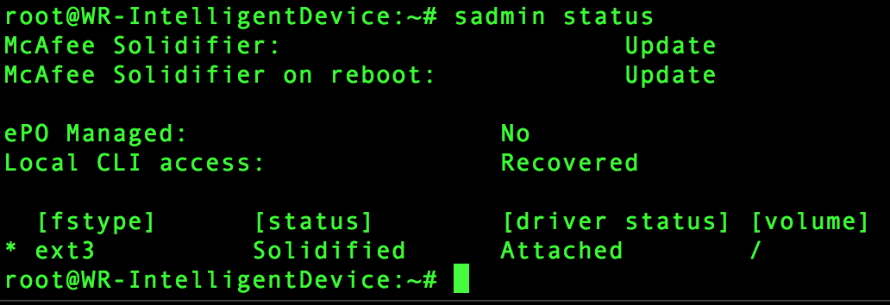
-
Execute the following command to display then update the contents of the file
/root/test_script.sh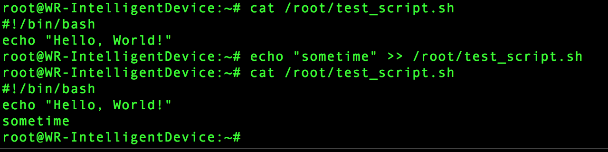
-
Now that you have modified /root/test_script.sh, execute the following command to change the MEC operational mode from update to enable and verify the new status.
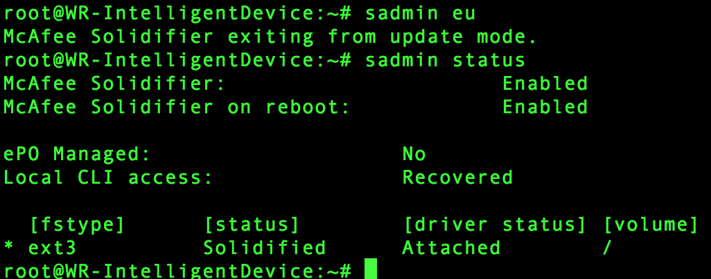
-
Execute the following command to test that update mode is closed and write/read protection is working.
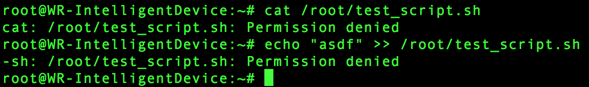
The Permission denied response confirm that you cannot read or change the file and that MEC protection is working.
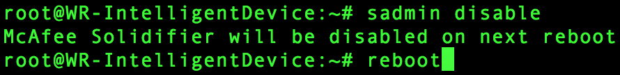
Disable Application Control
In this section, you will disable the MEC feature to return your target to the standard configuration.
-
As the MEC administrator, execute the following command to switch EC to disabled mode to deactivate the features of MEC application control.
sadmin disable -
As the MEC administrator, execute the following command to reboot the target.
reboot